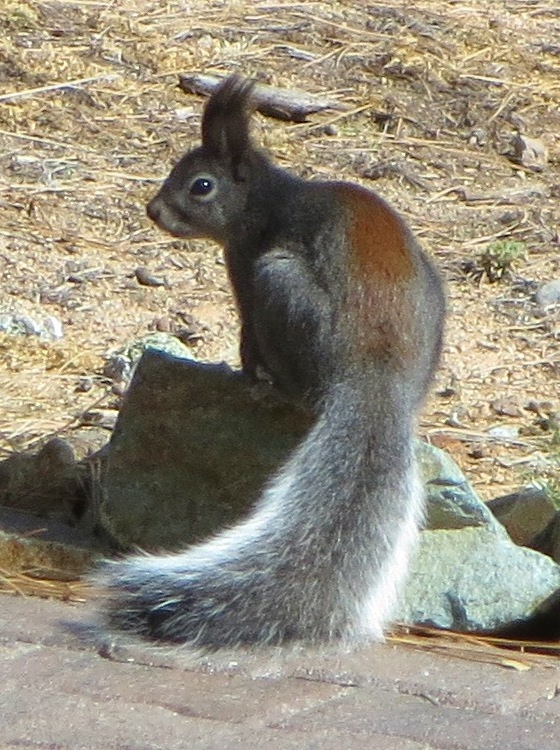
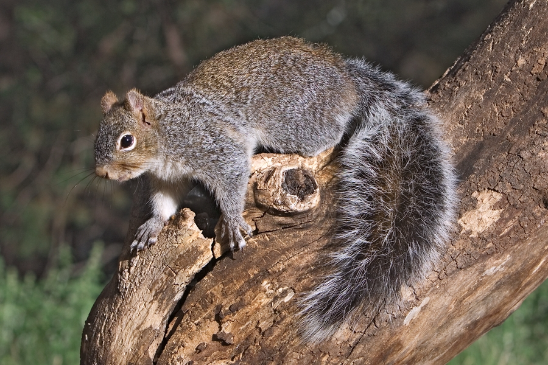
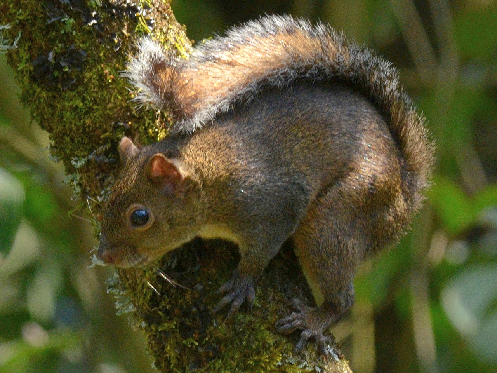
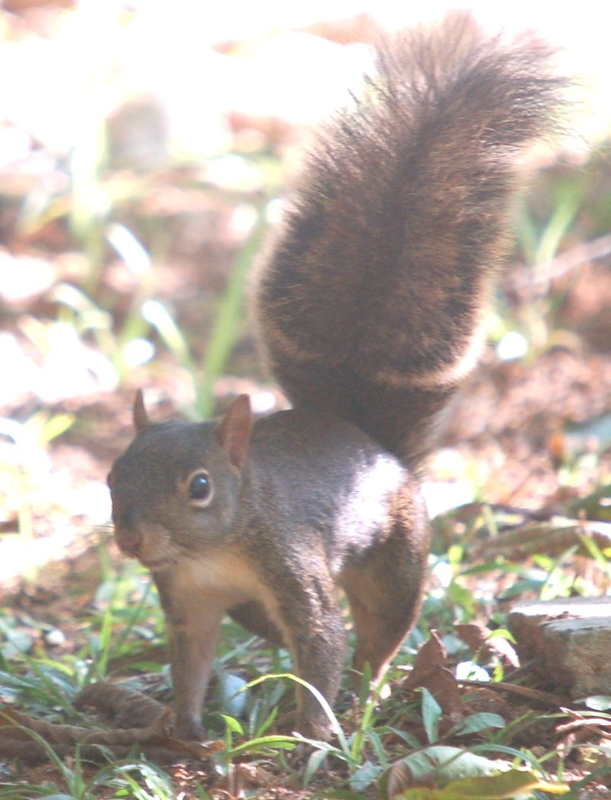
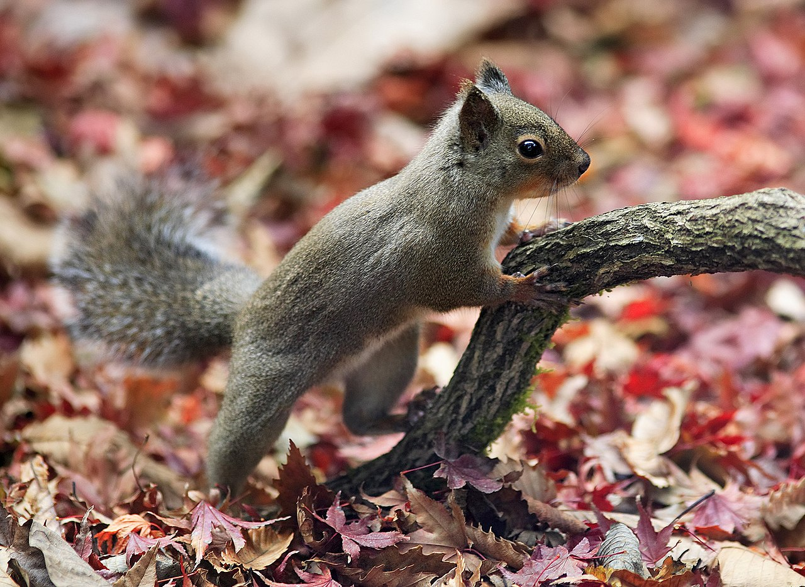
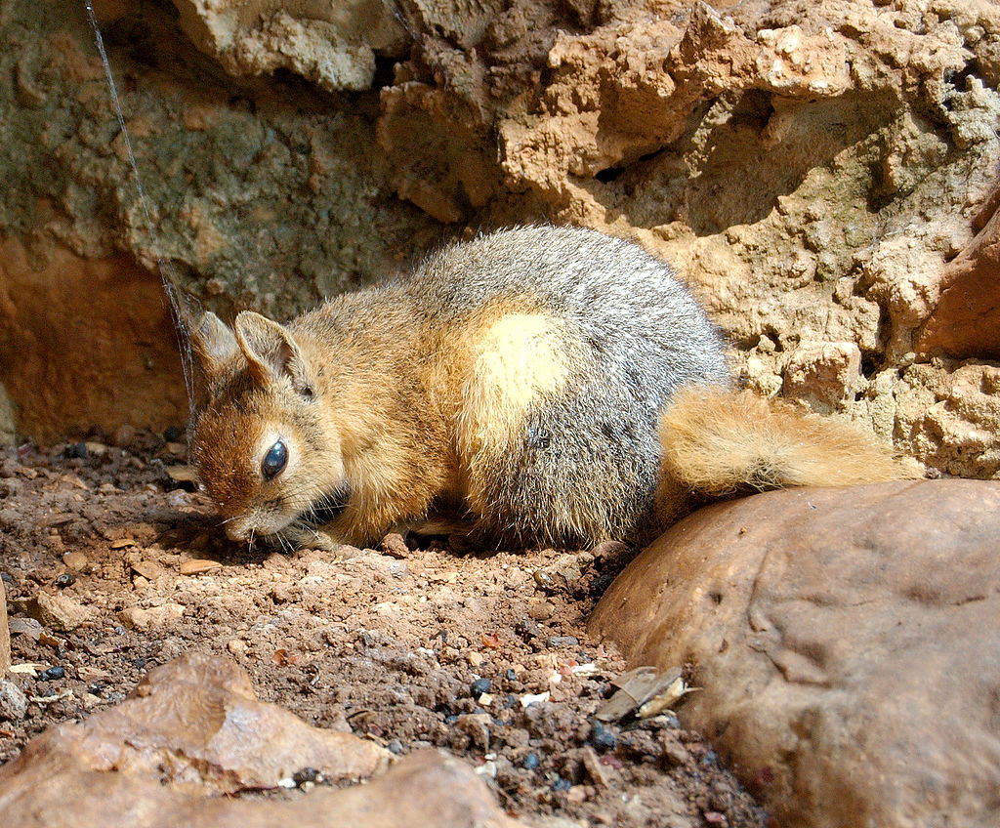
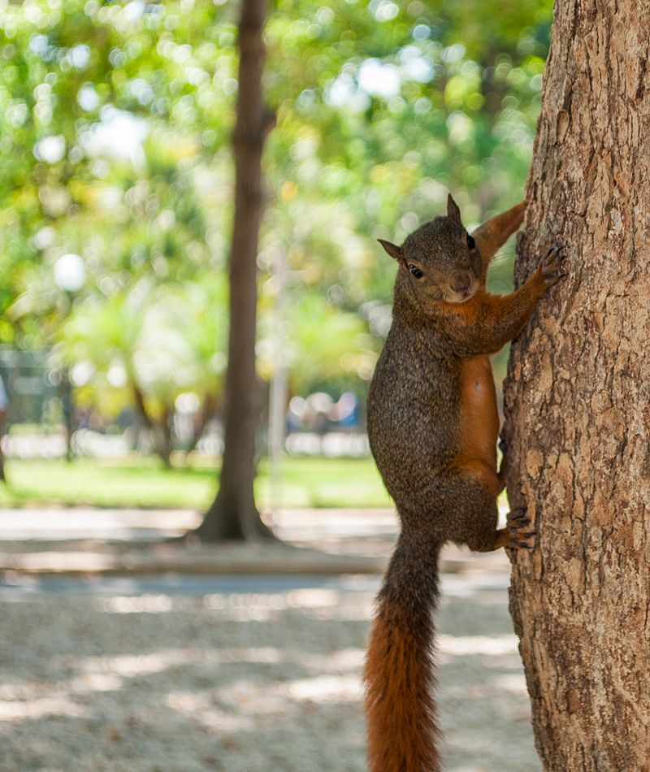
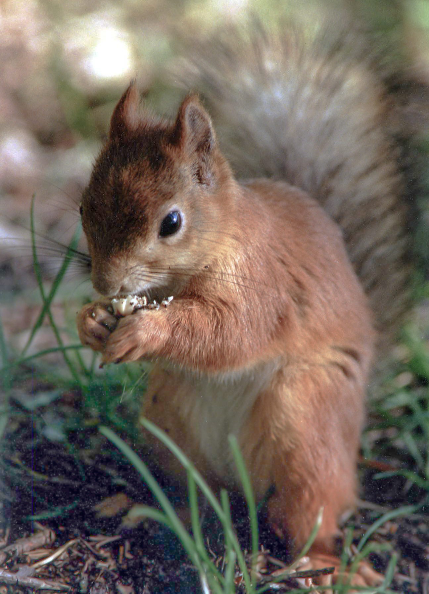

Белка из ледникового периода.

Белка Аберта.Распространена в США и Мексике.

Аризонаская Белка. Распространена в Мексике.

Белка Деппе. Распространена преимущественно в Южной Америке

Гвианская белка. Распространена на северо-востоке Аргентины, Бразилии.

Японская белка. Распространена в Японии.
Каролинская белка. Распространена в западной части северной Америки.

Кавказская белка.Распространена в Закавказье, Малой и Передней Азии и в Иране.

Краснохвостая белка. Распространена в Центральной и Южной Америке.

Белка обыкновенная. Распространена в бореальной зоне Евразии от побережья
Атлантики до Камчатки.
Золотобрюхатая белка. Распространена в Мексике.